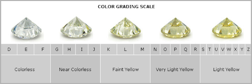

Diamonds - Part 1 - In the rough - An Exploratory Data Analysis
In this case study, we will explore the diamonds dataset, then build linear and non-linear regression models to predict the price of diamonds.
Data Description
The diamonds dataset contains the prices in 2008 USD terms, and other attributes of almost 54,000 diamonds.
| Attribute | Description |
|---|---|
| price | price in 2008 USD |
| carat | weight of a diamond (1 carat = 0.2 gms) |
| cut | quality of the cut (Fair, Good, Very Good, Premium, Ideal) |
| color | diamond color from D (best) to J (worst) |
| clarity | a measurement of how clear the diamond is (I1 (worst), SI2, SI1, VS2, VS1, VVS2, VVS1, IF (best)) |
| x | length in mm |
| y | width in mm |
| z | depth in mm |
| depth | total depth percentage = z/mean(x, y) |
| table | width of the top of diamond relative to widest point |



Data Summaries

A preliminary visual summary of the whole dataset shows all the features and their types. There are no missing values (NAs) in this dataset.
Let’s examine each feature numerically:
dfInput
10 Variables 53940 Observations
----------------------------------------------------------------------------------------------------------------------------------------------------------------
price
n missing distinct Info Mean Gmd .05 .10 .25 .50 .75 .90 .95
53940 0 11602 1 3933 4012 544 646 950 2401 5324 9821 13107
lowest : 326 327 334 335 336, highest: 18803 18804 18806 18818 18823
----------------------------------------------------------------------------------------------------------------------------------------------------------------
carat
n missing distinct Info Mean Gmd .05 .10 .25 .50 .75 .90 .95
53940 0 273 0.999 0.7979 0.5122 0.30 0.31 0.40 0.70 1.04 1.51 1.70
lowest : 0.20 0.21 0.22 0.23 0.24, highest: 4.00 4.01 4.13 4.50 5.01
----------------------------------------------------------------------------------------------------------------------------------------------------------------
cut
n missing distinct
53940 0 5
lowest : Fair Good Very Good Premium Ideal , highest: Fair Good Very Good Premium Ideal
Value Fair Good Very Good Premium Ideal
Frequency 1610 4906 12082 13791 21551
Proportion 0.030 0.091 0.224 0.256 0.400
----------------------------------------------------------------------------------------------------------------------------------------------------------------
color
n missing distinct
53940 0 7
lowest : J I H G F, highest: H G F E D
Value J I H G F E D
Frequency 2808 5422 8304 11292 9542 9797 6775
Proportion 0.052 0.101 0.154 0.209 0.177 0.182 0.126
----------------------------------------------------------------------------------------------------------------------------------------------------------------
clarity
n missing distinct
53940 0 8
lowest : I1 SI2 SI1 VS2 VS1 , highest: VS2 VS1 VVS2 VVS1 IF
Value I1 SI2 SI1 VS2 VS1 VVS2 VVS1 IF
Frequency 741 9194 13065 12258 8171 5066 3655 1790
Proportion 0.014 0.170 0.242 0.227 0.151 0.094 0.068 0.033
----------------------------------------------------------------------------------------------------------------------------------------------------------------
depth
n missing distinct Info Mean Gmd .05 .10 .25 .50 .75 .90 .95
53940 0 184 0.999 61.75 1.515 59.3 60.0 61.0 61.8 62.5 63.3 63.8
lowest : 43.0 44.0 50.8 51.0 52.2, highest: 72.2 72.9 73.6 78.2 79.0
----------------------------------------------------------------------------------------------------------------------------------------------------------------
table
n missing distinct Info Mean Gmd .05 .10 .25 .50 .75 .90 .95
53940 0 127 0.98 57.46 2.448 54 55 56 57 59 60 61
lowest : 43.0 44.0 49.0 50.0 50.1, highest: 71.0 73.0 76.0 79.0 95.0
----------------------------------------------------------------------------------------------------------------------------------------------------------------
x
n missing distinct Info Mean Gmd .05 .10 .25 .50 .75 .90 .95
53940 0 554 1 5.731 1.276 4.29 4.36 4.71 5.70 6.54 7.31 7.66
lowest : 0.00 3.73 3.74 3.76 3.77, highest: 10.01 10.02 10.14 10.23 10.74
----------------------------------------------------------------------------------------------------------------------------------------------------------------
y
n missing distinct Info Mean Gmd .05 .10 .25 .50 .75 .90 .95
53940 0 552 1 5.735 1.269 4.30 4.36 4.72 5.71 6.54 7.30 7.65
lowest : 0.00 3.68 3.71 3.72 3.73, highest: 10.10 10.16 10.54 31.80 58.90
Value 0.0 3.5 4.0 4.5 5.0 5.5 6.0 6.5 7.0 7.5 8.0 8.5 9.0 9.5 10.0 10.5 32.0 59.0
Frequency 7 5 1731 12305 7817 5994 6742 9260 4298 3402 1635 652 69 14 6 1 1 1
Proportion 0.000 0.000 0.032 0.228 0.145 0.111 0.125 0.172 0.080 0.063 0.030 0.012 0.001 0.000 0.000 0.000 0.000 0.000
For the frequency table, variable is rounded to the nearest 0.5
----------------------------------------------------------------------------------------------------------------------------------------------------------------
z
n missing distinct Info Mean Gmd .05 .10 .25 .50 .75 .90 .95
53940 0 375 1 3.539 0.7901 2.65 2.69 2.91 3.53 4.04 4.52 4.73
lowest : 0.00 1.07 1.41 1.53 2.06, highest: 6.43 6.72 6.98 8.06 31.80
Value 0.0 1.0 1.5 2.0 2.5 3.0 3.5 4.0 4.5 5.0 5.5 6.0 6.5 7.0 8.0 32.0
Frequency 20 1 2 3 8807 13809 9474 13682 5525 2352 237 20 5 1 1 1
Proportion 0.000 0.000 0.000 0.000 0.163 0.256 0.176 0.254 0.102 0.044 0.004 0.000 0.000 0.000 0.000 0.000
For the frequency table, variable is rounded to the nearest 0.5
----------------------------------------------------------------------------------------------------------------------------------------------------------------price: The average price of a diamond in this dataset is ~ USD 4000. There are many outliers on the high end.carat: The average carat weight is ~ 0.8. About 75% of the diamonds are under 1 carat. The top 5 values show presence of many outliers on the high end.cut: About 40% of the diamonds are of Ideal cut. Only 3% are Fair cut. So there is a lot of imbalance in the categories.color: Most of the diamonds are rated E to H color. Relatively fewer are rated J color.clarity: Most of the diamonds are rated SI2 to VS1 clarity. About 1% are rated the worst I1 clarity, where as only ~ 3% are rated IF.depth: Most of the depth values are between 60 and 64. There are outliers on both low end and high end.table: Most of the table values are between 54 and 65. There are outliers on both ends.x: Denotes the dimension along the x-axis. Most values are between 4 and 8. There are some 0 values too which means they were not recorded.y: Denotes the dimension along the y-axis. Most values are between 3.5 and 8. There are 7 records where the values are 0.z: Denotes the dimension along the z-axis. Most values are between 2.5 and 8.5. There are 20 records where the values are 0.
Univariate Analysis
Let us look at each feature in the dataset in detail.
Numerical Features

The plots show presence of outliers within each feature. Let’s exclude the outliers and plot them again.

Excluding outliers, the range of values are more reasonable. We can see that carat and price are heavily right skewed.
Let’s plot the distribution of price in log scale:

Two peaks in the log transformed plot show a bimodal distribution of prices. This implies two price points of diamonds are most popular among customers - one at just below USD 1000 and the other around USD 5000. Intriguingly, there are no diamonds in the dataset that are around USD 1500. Hence, a big gap is visible around that price.
Categorical Features

The categorical imbalance in cut and clarity can be clearly noticed.
Bivariate Analysis
Let’s examine the relationship of price with other features.
Numerical-numerical
First and foremost, let’s do a correlation analysis to see how price is correlated with other numerical features:

We can see that price is very strongly correlated with carat, x, y, and z dimensions. If a predictive linear regression model is built,
some of these features would act as confounders. table and depth have almost no correlation with price so they are not so interesting for
predictive modelling.
Now let’s see the scatter plots:

After removing outliers, it could be noted that price increases exponentially with carat, as well as x, y and z dimensions. So price should be plotted with a log tranformation. Let’s do that:

Now, the relationship between log(price) appears to be linear with x, y and z. But, not so much with carat. Variance in price tends to
increase both by carat and its dimensions. Log transforming carat wouldn’t help because carat does not have a wide range.
We will find ways to deal with this when we do Feature Engineering.
Numerical-Categorical
Let’s examine price with respect to the categorical features in the dataset:

The boxplots above are plotted with truncated price axis for better visualization of trends. All the boxplots are counter-intuitive - median prices tend to decline as we move from lowest grade to highest grade in terms of cut, color and clarity. This is very odd.
- The median
pricedeclines monotonically from Faircutto Idealcut. - In terms of
color, the medianpricedecreases from J (worst) to G (mid-grade), then increases and finally decreases for D (best). - The median
priceincreases whenclarityimproves from I1 to SI2, and then decreases monotonically to IF grade.
Multivariate Analysis
So far, we have determined carat, x, y, and z have the strongest relationship with price. Different grades of cut, color and clarity also seem to have some impact on median price. So let’s make some scatter plots to see these relationships:
Numerical-Numerical-Categorical

Although there is a lot of overlap, but there is a clear trend of price increasing with clarity, at a given carat weight. The same pattern could also be observed in the plot with increasing grades of color, though not to the same extent. There is no evidence of any relationship between price and carat with cut.
We can conclude both color and clarity explain some variance in price at a given carat weight.
To be sure of any interaction between table and depth, with color and clarity, let’s plot these:

There is no pattern in the interaction of price v/s depth and table values when plotted by color and clarity. So, these features do not have any predictive ability to determine price.
Categorical-Categorical-Numerical
We want to see if there is any interaction of clarity with cut and color, that could provide any additional explanatory power to predict price:

The second heatmap appears to be more interesting. From bottom left to top right, with increasing grades of color and clarity, price tends to decrease on average. Once again, this runs counter to our intuition; after all prices of diamonds with the best color and clarity should be the highest. Nevertheless this counter-trend persists in the dataset.
With respect to cut and clarity, the mean prices do not show any discernable pattern.
Summary
To summarize, here’s what we found interesting in this dataset, after doing an exploratory data analysis:
priceis heavily right-skewed, and when log tranformed, has a bimodal distribution which implies there is demand in 2 different price ranges.caratabout 75% of the diamonds are below 1 carat. The variance in price increases with carat weight.cutis imbalanced with about 40% of the diamonds rated Ideal.coloris imbalanced with about 5% of the diamonds rated J.clarityis imbalanced at the extremes, with only 1.5% of the diamonds rated I1 and 3.3% of the diamonds rated IF.priceis strongly correlated withcaratandx,y,zdimensions of the diamonds.tableanddepthhave almost no correlation withprice.- Both
clarityandcolorappear to explain some variance inpricefor a givencaratweight.